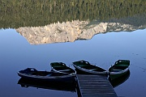

Montenegro :: A Closer Look
|  |
Durmitor National ParkDeep in the mountains of northern Montenegro is Durmitor National Park, a paradise for hikers and anyone who loves the outdoors. |

|
Kotor and SurroundingsWhat to see in Montenegro's most photogenic town, with suggested excursions to nearby Budva and Cetinje. |